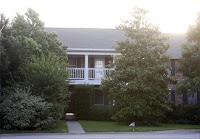

According to police in Austin, Texas, Billy Dan Carroll spent the better part of the past three decades assaulting and raping dozens of victims -- from girls as young as two years of age to adult women whom he lured to his home and then drugged into unconsciousness.
His alleged acts ("alleged" because Mr. Carroll has yet to be convicted of a crime) are reportedly documented on videotapes kept in his possession.
Austin police Sgt. Brian Lloyd, a 22-year veteran child abuse investigator, has rarely seen the like of Mr. Carroll, who he describes as “the worst of the worst…. Several of these children were abused multiple times.” One six-year-old girl was allegedly raped twenty-three times.

It also means that Carroll was given access to many children -- some of them, perhaps, from abusive homes, others from homes and parents that were not abusive by any reasonable standard, but nonetheless were deemed unsatisfactory by the omniscient custodians of the State's children at the Texas DFPS.
In fact, it was through his work as a CASA on behalf of the Texas child "protection" bureaucracy that Carroll became acquainted with the 8-year-old girl whom he most recently molested, according to a criminal indictment. Understandably, other parents who suspect that Carroll may have taken indecent liberties with their children have been "flooding" the CASA organization with phone calls.
Credit must be given to the Austin Police Department for the professional fashion in which they have built their case against Mr. Carroll. His home -- which was never referred to as a "compound," incidentally -- was the subject of a search warrant that was issued on the basis of solid evidence, rather than an anonymous phone call from an obviously demented woman. Specific evidence was sought, found, and secured. Carroll was brought before a judge in a timely fashion and indicted on specific charges and given steep ($2 million) but reasonable bail.


This was done, incidentally, without sending in SWAT operators in paramilitary drag and deploying an APC and sniper teams. Nor was the entire neighborhood in which Carroll lived cordoned off and treated as one huge crime scene, with the neighbors being looked on as co-conspirators with Carroll on the basis of propinquity.
The search warrants and all photographic evidence against Mr. Carroll have been sealed, which is entirely appropriate: It wouldn't be wise to taint the jury pool against the suspect by publicizing salacious (and speculative) details or circulating lurid photographs.
Laura Wolf, executive director of the CASA program, made a point of telling the media that the suspect's application and background check are protected from public scrutiny by a confidentiality agreement. So until and unless those documents are subpoenaed and presented in court, we have no way of knowing whether CASA and the agency it answers to ignored any evidence that Carroll had been a practicing pederast for decades when they agreed to let him have access to vulnerable children.
Ms. Wolf, it should be remembered, played a conspicuous role in the seizure of more than 460 young people -- children, for the most part, but a handful of adult mothers who were deliberately mis-identified by CPS as "pregnant minors" -- from the FLDS community. I don't recall reading her protests over the due process irregularities that led to this mass kidnapping. Nor can I seem to turn up any publicly expressed misgivings from Ms. Wolf over the widespread selective publicity given by CPS to various documents seized from the FLDS -- including confidential church rosters and lurid photographs of FLDS leader Warren Jeffs that were introduced as a cynical PR gesture in a custody hearing to which those pictures were not germane.
Ms. Wolf helped scatter the FLDS children from one end of Texas to another, secreting them into a foster care and child welfare program riven with corruption and rife with abuse. To her credit, one of her public comments about the FLDS matter makes incontestable sense: "This particular story has gotten a lot of attention and piques a lot of interest. But there are children all over the state who are experiencing abuse and neglect every day."
Indeed. Many of them are being abused in that same child welfare system. In fact, one of them was probably being molested by Mr. Carroll as that sound-bite dribbled down Ms. Wolf's chin.
Carroll isn't the only opportunistic sexual predator recently uncovered in the Texas child welfare system.
Roughly a year ago, a 13-year veteran Child Protective Services caseworker named Frederick Shavers was arrested and charged with sexual misconduct involving a 15-year-old girl whom he was supervising. According to police in Grand Prairie, there was "a mountain of evidence" that Shavers began a sexual "relationship" with the young girl -- an unwed teenage mother -- when she was thirteen years of age.
Shavers was 37 years old and married with two children at the time of his arrest. This means he was 35, and his inamorata was 13, when they began their affair. Gee golly Ned, it seems to me that Mr. Shavers was doing exactly what the agency that employed him said was happening at the YFZ Ranch. The significant difference here, of course, is that CPS didn't bother to prove any of the things it professed to "know" about the FLDS community -- and Shavers was forced to resign in April before being arrested last June.
Furthermore, it appears that this was not the first time that Shavers had been accused of sexual misconduct and other improprieties. According to the Dallas News, Shavers "has been the subject of several prior CPS inquiries" regarding his conduct.
In 1994, a 12-year-old girl "accused Mr. Shavers of kissing her during horseplay at a pool in Greenville." Seven years later, he ended up in a fight with a 20-year-old man whom he had taken into his home as a minor in CPS custody. Just the week prior to his resignation from CPS in April 2007, Shavers was accused of coaching a child "about how to testify in a family court in Hunt County." The purpose of that coaching, explains the News, "was to make it seem like he was doing his job more thoroughly" than he had, according to the child's mother.
Remember, Shavers at the time of his 2007 resignation had been with CPS for thirteen years; that meant that the first allegation of sexual misbehavior came immediately after he was hired by the agency. And his work record ended with allegations of suborning perjury from a child witness.
Shavers supervised an estimated 600 children during his career as a caseworker. His case records are under police scrutiny on the assumption that other children were abused in various ways by the former child-saver.
But CPS, of course, did nothing wrong in keeping Shavers on the payroll for over a decade. Agency spokeswoman Marissa Gonzalez insisted that CPS "handled Mr. Shavers appropriately during his career," observes the News: "I think each of those incidents was handled appropriately."
Let us be clear about an important distinction: There are no due process considerations regarding a job on the public payroll. It's not necessary to prove an allegation beyond reasonable doubt in order to terminate the employment of a bureaucrat accused of a sexual offense against a child (although the allegation should be kept confidential pending any criminal proceedings). Had CPS been genuinely interested in child safety it would have excised Frederick Shavers from their roster in 1994.
But Shavers was given the benefit of every doubt. The same was quite possibly true of Billy Dan Carroll. The innocent FLDS parents, of course, enjoyed no such deference.
Mother and child reunion -- for now: Freed from the criminal clutches of the Texas CPS, a boy ecstatically hugs his mother. Unfortunately, the CPS still has that child in its crosshairs.

And now, despite the fact that the Texas Supreme Court has made it clear that the entire abuse case against the FLDS community is a legal travesty, those long-suffering parents are still subject to an ongoing criminal probe -- as well as a species of home imprisonment under the arbitrary and plenary authority of the same agency that sheltered at least one known child molester and -- given the Carroll case -- quite possibly many more.
Barbara Walther, the criminally inept judge who issued both of the defective search warrants for the YFZ Ranch and the order separating the FLDS parents from their children, was the recipient of a brutal "bench slap"* from the Texas Supreme Court. That court ruled that the "removal of the children was not warranted" by the available evidence, and that Walther had "abused" her discretion by issuing the order to remove them.
Now, of course, Walther couldn't simply acknowledge her errors and do her best to undo them by repealing her order. She had to do something to maintain the pretense that her opinions about this case are somehow more respectable than those of any other self-important harridan.
So, in an act of consummate petulance, she refused to rescind her order last Friday. To the astonishment of all present, Walthers stalked out of the courtroom without concluding business, leaving counsel and spectators alike to gag on the stench of her toxic arrogance and spite.

"C'mon, boys -- we've got families to destroy!" Protected by an armed phalanx, Judge Barbara Walther strides with purposeful malice toward the courtroom.
This was most likely done as a way of making the FLDS parents that much more pliant when Walthers (a veteran of the totalitarian family court system) presented them with her terms on Monday. According to the New York Times, Walther's order "imposed a lengthy list of caveats pending the conclusion of the investigation, including surprise home visits by caseworkers, possible psychiatric evaluation of the children and a ban on travel outside Texas."
Two things must be kept in mind.
First, the CPS is known to harbor child molesters among its caseworkers and legal volunteers. Walther's order compels these innocent parents to associate with a tainted population that could include child sex offenders.
Second, those parents -- once again -- are innocent before the law. They have been convicted of nothing, indicted for nothing -- indeed, they haven't been charged with any offense. Yet they are now imprisoned at their ranch by judicial degree, subject to the invasion of their property at the whim of a manifestly corrupt, incompetent, and hostile government bureaucracy, and forbidden the freedom to travel that is the indefeasible right of every American citizen.
The CPS is still engaged in a criminal enterprise, and Walther is their fully enlisted accomplice. That agency will not relent until someone in the FLDS community is railroaded into court as an abuser, thereby permitting the child-snatchers to try, once again, to prosecute the entire community under the novel doctrine of collective criminal guilt devised especially for this case.
Perhaps the only way that the CPS could be more cynical and devious would be to assign caseworkers known to be child abusers to supervise FLDS families -- and then demand the prosecution of the parents for associating with known abusers.
Update: Toss The Wench Off The Bench!
It may be entirely symbolic, of course, but a petition is being circulated calling for Judge Walther's impeachment.
__
*I owe that expression -- along with a fair piece of what we've learned about this case and the illustration at the top of this essay -- to the exceptionally fine writer who produces the Grits for Breakfast blog.

On sale now!
Don't let the sun go down without doing something to piss of the keepers of The List!
17 comments:
Here are some real gems....
"The proposal also stipulated the parents would undergo parent counseling and cooperate with the ongoing investigation"
Now isn't that special. First an illegal and unjust invasion occurs and once the children have been kidnapped the kidnappers, caught with their proverbial pants down, turn around and finger the people they're abusing telling them to under go "counseling" while their illegal investigation continues. The nerve! Why don't the Texas courts grow some cajones and remove Walther?
"It also said case workers should have access to the ranch at "any and all times necessary to the investigators."
Simply amazing. After getting slapped they continue on as though nothing has happened. No consequences. Here again they need a swift kick in the butt and told once and for all to get their hands off. It's as though they're just begging for an excuse and drawing out the time to justify this sad charade.
I'm certain the decrepit Walther needs the bodyguards after starting this firestorm. Her arrogance seems to know no bounds.
Thank you, Mr. Grigg, for this latest update.
Texas Youth Commission scandal about a year ago was all swept under the rug. Administrators and employees of this prison system for juveniles were simply operating a perderast palace. They even had rape sessions of the chidlren prisoners in the middle of the night and the parking lot was full of cars from men some would call "Texas' finest" who were professionals and high level government and business people.
Two privately owned jails in Travis County were closed due to rape of the inamtes by the guards.
All of this is hushed. Administrators of these agencies and facilities are corrupt and evil and even the Texas Rangers are told to keep quiet about the goings on at these places.
The top CPS judge in Travis County was formerly a "woman" named Jean Muir. They named our big county family court of law building after her. Alex Jones rightly used to always refer to her as a "monster."
Texas is a cesspool as far as caring for abused children.
I notice governor Rick Perry is keeping a very low profile in this national travesty. He is part of the most corrupt cabal that is the Texas juvenile protection and justice system.
Texans, stop messing with Texas children!
As always, great information and coverage of this horror.
Conan the Cimmerian
I have greatly appreciated your updates as this case unfolds -- thanks for the efforts!
A small bit of truth from the media confusion regarding the FLDS:
Rep. Harvey Hilderbran, R-Kerrville[, TX], ... began looking for ways to rein in his FLDS neighbors.
Representative Hilderbran from Kerrville is a tyrant, a busybody, a crook, and the moral equivalent of a Mafia thug.
The FLDS are NOT Hilderbran's neighbors. According to Google maps, Kerrville is nearly two hours from Eldorado. Why should a man in Kerrville have the authority to tell people in Eldorado how to live? This is a moral question we really should answer, with monstrous implications for the whole foundation of most people's thinking.
There's a line drawn across the middle of the Rio Grande river. We call it the border between Texas and Mexico. People living north of the line don't have the authority to tell people living south of the line how to live, and people living south of the line don't have the authority to tell people living north of the line how to live. If people cross the line with guns and try to force their will on others, we recognize they are criminals. The only way for people on opposite sides of the line to influence each other is by voluntary agreement. This can happen on a massive scale, in the form of treaties, and it can happen on an individual scale, in the form of small purchases, and it can happen on every scale in between.
Representative Hilderbran has no more authority to force his approval or disapproval of marriages on the FLDS than I do to go next door and tell my neighbor who his daughter can or can't marry. Marriages at age 14 and up with parental consent were deemed perfectly moral and acceptable by the gang of thugs in Austin calling itself the State of Texas prior to October 2005. They did not suddenly become immoral. Apparently the Austin Gang thinks these marriages were just fine as long as nice Baptist and Methodist people were letting their children get married at 15; it's only a problem when scroungy FLDS people move in and do it. Baptists and Methodists don't constitute near as much of a threat to the established order as do the radical FLDS.
There is no moral reason why there should be a line across the Rio Grande between Texas and Mexico, but no line drawn between Eldorado and Kerrville. People have the right to self-determination. If Texas and Mexico each have the right to self-determination and it must be mutually respected, then so does each component territory within the U.S. and within Mexico, so does each county within each U.S. State, so does each city, in fact, so does each household. Why should there be a line between Texas and Mexico? Surely it's not because the people to the south have dark skin and speak a different language, is it? Is that why it's okay to draw a line to keep those people out, but not okay for FLDS near Eldorado to draw a line to keep whites out? I don't think that's the motivation ... but what other consistent response can be offered?
We've invented the fiction that voting equals self-determination. Here the truth is exposed: voting in this case eliminates self-determination by giving a fake legitimacy to the crime of a man from Kerrville oppressing the FLDS. Self-determination is robbed from the FLDS. Their fate will now be determined by "neighborly" thugs like Hilderbran, offering us all "protection" if we will pay and acknowledge his authority, as he makes us an offer we literally can't refuse.
The cult here is not the FLDS. It's the religious belief that the gang in Austin is legitimate in exercising its authority and is beneficial as it does so. And that belief permeates almost all of society, within and without Texas. This is why Austin is so scared of groups like the FLDS: they offer something else to believe in and venerate, an alternative culture to the one mandated by our gang. They are competition, and the gang is trying to wipe them out.
How very Nifongian of Judge Walters. May her fate in the end be the same.
Not advocating harm to this judge, but I would bet if she didn't have tax payer funded thugs as bodyguards, she wouldn't be such an arrogant servant. If it were up to me, I would remove all tax funded bodyguards from all government employees, from G.W. Bush down. If they think they need protection,let them pay for it from their own pockets or do like the rest of us and call 911.
To better understand the real intentions of the authorities, look into phrases like.
[ “ FLDS worry grand jury could come after them” TSLT ]
"It's early in the game,"
“we are disappointed”
“we will see the tide turn once again”
“the biggest custody battle in US history”
this is not from the Dallas cowboys, it is from the hypocrites who pretend to act in the best interest of the children.
The real intentions and goals are victories of the government against the people, wins that solidify government power, and demoralize the subjects.
And notice how easily the authorities identify with a documented crack whore Flora.
Because the country is like the way the FLDS church would be with Flora as the prophet.
It is scary.
But we live in a rogue state. Criminals are in control of the government. Historically, when criminals become the government, the people get fancy lectures by the ones that destroy them. It is the obvious sign that their real plans have to be concealed.
The FLDS handling is only one sample, the perpetual war that we are in is another.
Unfortunately, there is no hope, because only total destruction reawakens people’s desire for peace and justice.
Like Mike Nifong and Hillary Clinton, Judge Walther just doesn't know when to quit.
Wouldn't it be great if she were held in contempt of the Texas Supreme Court, and jailed in gen pop?
Bend over, wench!
""Child Protective Services has one purpose in this case - to protect the children. Our goal is to reunite families whenever we can do so and make sure the children will be safe."
That is a patently false statement. We the people will never know the true motivations that prompted this debacle. It most likely had something to do with orders from corrupt Rick Perry and his machinations with our secret government thugs. Wonder if old Rick will again be attending the Bilderberg meeting that is starting today in McClean Virginia.
There are numberous orders and racketeering type actions and motivations that impact on CPS. It is sad but the historical record is the children of Texas do not stand a chance.
This is an article worth reading.
"Important Win For Fathers,Children in Nebraska Supreme Court"
http://www.bloggernews.net/116039
It addresses some important issues contained in the "pro-state custody" mindset.
examples of mindset:
Those who state that all this fuss over the "rights" of "biological parents" is silly.
That it's best to have the welfare of children in this country monitored and mandated by an "impartial" government.
etc., etc., ad nauseum . . .
The state is NOT - NOW - nor will it EVER BE - a parent.
Families are "our country".
If one reads the writings of our founding fathers, it is readily apparent that - the rights of individual citizens and families - to be "safe" from "intrusion of government" within their homes - was a priority.
If the sanctity and rights of the family (as individually expressed) are not upheld - then any claim of "freedom" - will be only empty rhetoric and illusion.
Don't know if this comment section is still open but if so . . .check these out. Unbelievable.
"Texas Gov. Rick Perry defends state's seizure of polygamist sect's kids"
http://www.dallasnews.com/sharedcontent/dws/dn/latestnews/stories/060608dntexpolygamistsperry.2911ea7.html
and
"Texas governor suggests sect may want to move on"
3 hours ago
http://ap.google.com/article/ALeqM5iIdMpRHjN4hpNKBhfYyAsR4DDo4QD91497TG0
ELDORADO RAID
Perry defends raid on polygamist sect
Elder calls Perry's remarks shocking.
ASSOCIATED PRESS
Friday, June 06, 2008
http://www.statesman.com/news/content/news/stories/local/06/06/0606flds.html
Rick Mr. Sleaze Perry ruins the life and reputation of his family, wife, children, by his escapade in the Gov's mansion bed with Mr. Secretary of Stante, and he has the audacity to moralize for Texans and the safety of children.
He apparently has been in Europe coducting business for the state of Texas. Shows how in the clutches of the internationalist business interests he has placed Texas business.
Proportionately, Rick Perry has done just as reeked just as much harm and devastation to the once great state of Texas and its people as The Smirk as to our national republic.
Rick Perry, according to Mr. Grigg, worked hard to stop the Comptroller's investigation and expose of the Texas foster care and CPS system. I know the investigation was stopped but I could not get the current Comptroller office of answer any questions regarding Perry's actions in that regard. All I know is that this particular kind of investigation function was transferred to anoher state agency and the report was stopped and silenced and the Texas CPS and foster care system has continued to attack and ruin families and trample on the rights of children and parents.
Thank you for such a well spoken post. We were similarly harassed in Alabama. They stole my children returned all but my eldest after 24 hours. Tried to have me committed so I could not talk to the judge to retrieve the children in the 24 hour first court appearance. They bribed the eldest, fabricated information, and told us unless complete compliance was received on our part we would never see her again.
They demanded my attendance in therapy the day I returned from the hospital from a difficult, dangerous birth in an office over 100+ miles away when my son was in the nicu. This was considered non-compliance when I refused but agreed to phone conference or postpone. That is when they decided they would launch an all out assault to destroy our family and refused my daughter's contact with us.They broke court visitation orders with no notice and to this day we still believe she was molested when in their care. They made up false allegations because this was in a state other than our residence, and they wanted to try to have the other state try to take our children. When the court case was finished the foster mother stole almost $1000 worth of belongings we gave my daughter while in their care and when we requested the return of these items they once again sent the other states cps system on us for false allegations and to "check on us".
They returned to me a child with no real understanding of authority who feels we should cater to her every whim. The pictures of her pre-cps and post cps speak volumes. The reason from the court officials for the hounding....because we were different. The psychiatrists are just a paid extension of the cps system.
There is so much corruption all for federal kickbacks and a power trip.Many of the foster familys seem to be parents who cannot have children on their own and are fed lies about the parents to encourage them to further fracture the family unit. This case will not end until they feel they have proven an abuser exists even if they falsify it.
Three people lost their jobs after our case ended and we momentarily opened the eyes of the local judge but my daughter's life is forever damaged and my family bears the scars of a system that just put a new set of offenders in. We live in fear of reprisals after just asking for the return of my daughters belongings brought a whole new wave of grief (we never were returned the items and chose not to purssue it out of fear...). These people will not get any rest if our case proves anything because they will forever fear being judged because they are different...
Hello. Would you mind sharing the original site where you got the picture of the gun man and the little boy peeing? I would like to know.
These websites that tout the crimes of the CPS are a dime a dozen. How about instead of spreading the word of their crimes, you actually start DOING something about it, and spreading the word on how we can bring these bastards down. I'm sick of listening, I'm ready to fight for our citizen's rights! I've experienced this kind of corruption before, my children were unjustly taken for two YEARS, and neither me or my spouse were charged with anything. We were subjected to the unconstitutional "Family Court", and eventually our children were returned to us, after considerable legal pressure. We went broke fighting the system, I *REFUSE* to stand by and watch others suffer the same fate as me. START DOING SOMETHING.
I'm the girl that is being talked about in the Fredrick shaves case. It's hard to know the memories of my past will still on... It seems like they will never go away.
Post a Comment